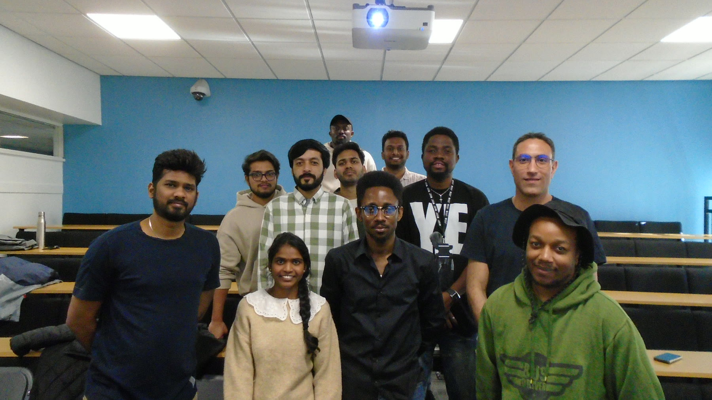

Connect
Building meaningful relationships between professionals, universities, industry and professional bodies.
About Northumbria Construct
Northumbria Construct is a community of students connecting with academia, industry and professional institutions through meaningful engagement, shared knowledge and opportunity.

Our story
Founded by Kufre Usen Antia, Northumbria Construct grew from Bridge the Gap—an award-nominated entry in the Association for Project Management Project Management Challenge.
The project examined why talented students can struggle to move from higher education into professional practice. Instead of leaving the findings in a report, the team turned its recommendations into a community of students.
Today, students come together through Northumbria Construct to connect with people, institutions and ideas, making professional knowledge, networks and opportunities easier to access.
Our purpose
Technical ability matters, but successful careers are also shaped by access to experience, mentors, networks and a clear understanding of professional pathways.
Northumbria Construct creates structured opportunities for students to connect with academia, industry, experienced professionals and professional institutions.
Through engagement, mentoring, research, volunteering and collaboration, we help students understand not only what they can become—but how to get there.
How we work
Our model supports professional growth from first connection to lasting impact.
Building meaningful relationships between professionals, universities, industry and professional bodies.
Creating practical experiences that support learning, confidence and career growth.
Turning research and shared insight into practical ideas for better project delivery.
Creating environments where today’s professionals empower tomorrow’s leaders.
Our values
Everything we do is designed to create meaningful impact.
Leadership begins by helping others succeed.
The greatest challenges are solved together.
Integrity, accountability and excellence underpin our work.
Our direction
Connecting people,
knowledge and opportunity.
From Northumbria to a growing international community.